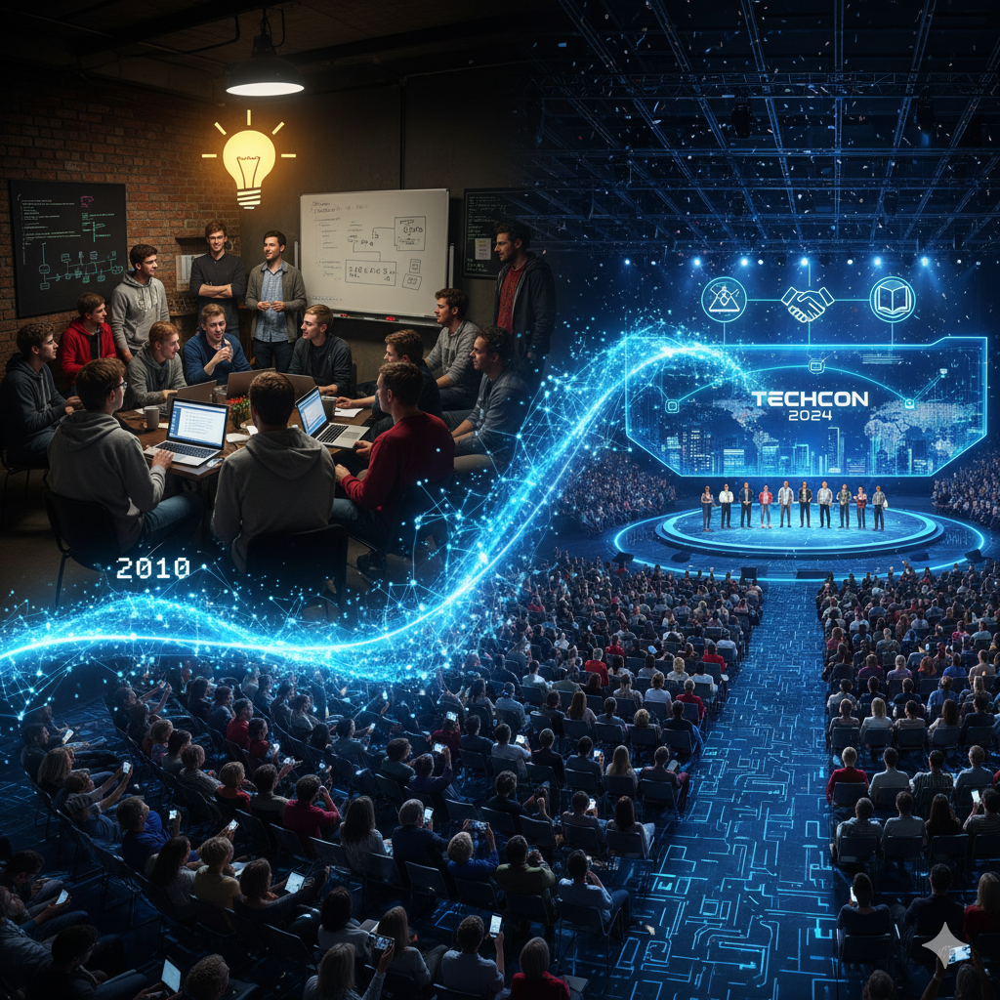
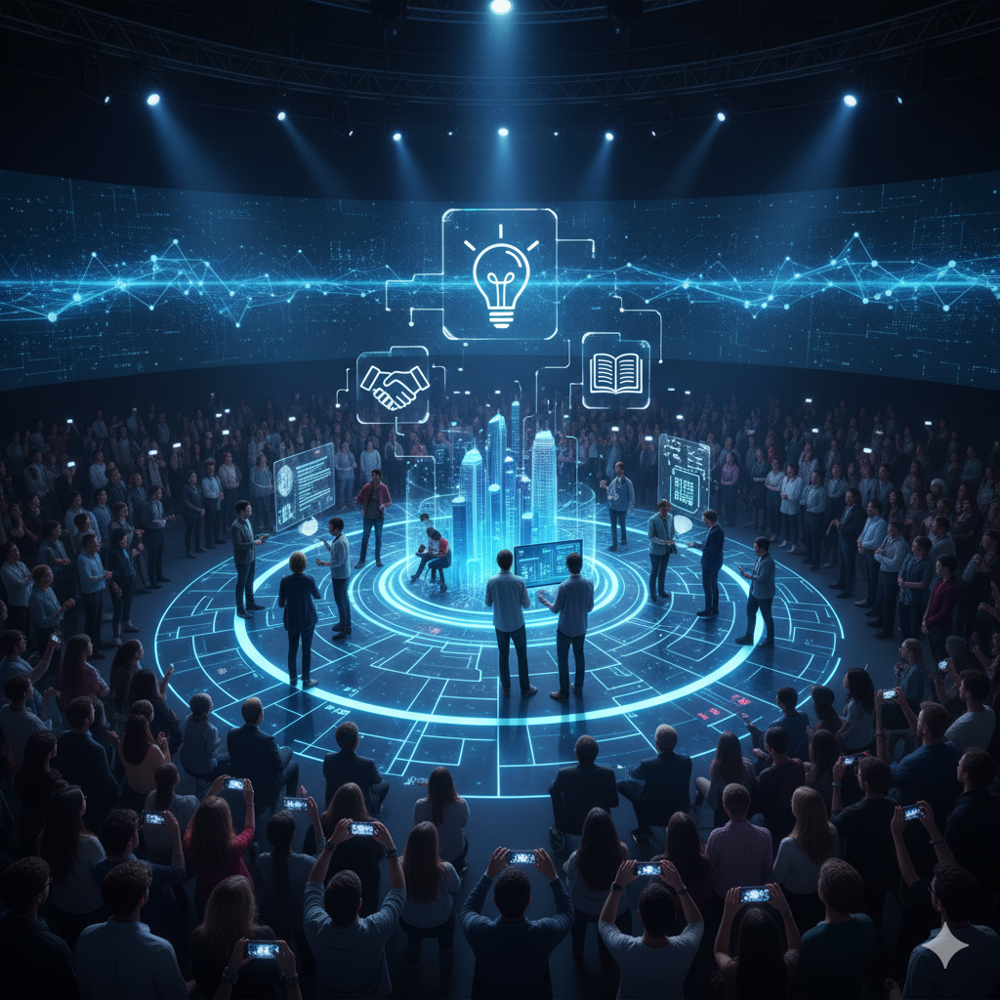
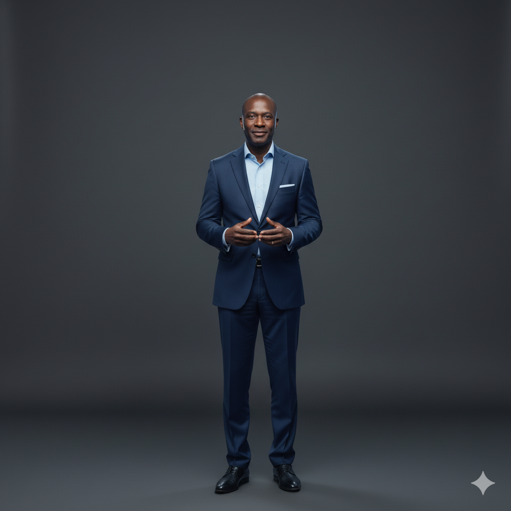
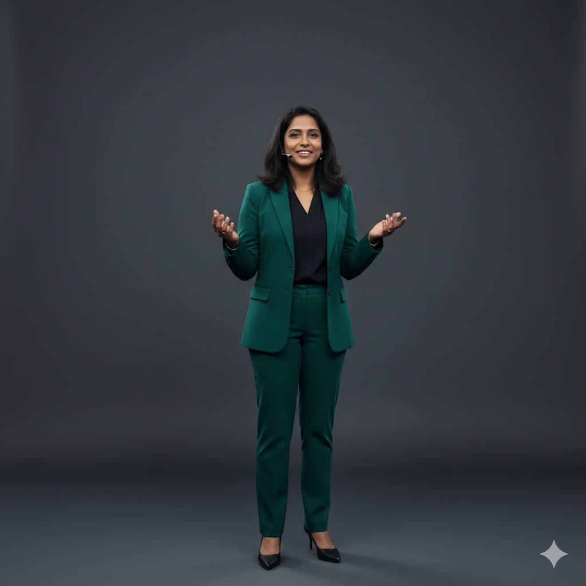

History
TechCon was founded in 2010 with the mission to create a collaborative platform for technology enthusiasts, professionals, and innovators to share knowledge, network, and explore the latest advancements in the tech industry. Over the years, TechCon has grown from a small gathering of local developers to a globally recognized conference attracting thousands of attendees from around the world.

Mission
Our mission is to foster innovation, collaboration, and education within the technology community. We aim to provide a platform where ideas can be exchanged freely, skills can be developed, and meaningful connections can be made to drive the tech industry forward.

Past Speakers
Dr. Peter Ndegwa
Dr. Peter Ndegwa is a renowned AI researcher and professor at MIT. He has been a keynote speaker at TechCon for the past five years, sharing his insights on artificial intelligence, machine learning, and their implications for society. His groundbreaking work in AI ethics has influenced policies worldwide.

Aisha Patel
Aisha Patel is a cybersecurity expert and consultant with over 15 years of experience in the field. She has been a speaker at TechCon for the past three years, focusing on topics such as data privacy, threat intelligence, and secure software development. Aisha is known for her engaging presentations and practical advice for organizations looking to enhance their security posture.

Liam Mwangi
Liam Mwangi is a leading figure in cloud computing and DevOps. As the CTO of a major tech company, he has been a featured speaker at TechCon for the past four years, discussing the latest trends in cloud infrastructure, containerization, and continuous integration/continuous deployment (CI/CD) practices. Liam's sessions are known for their technical depth and real-world applications.